Nevitium Invoice Manager User Guide
This is a work in progress. Updated daily.
Table of Contents
- Getting Started
- Introduction
- Installation
- Windows Install
- Universal Zip File Install
- Portable (Flash Drive) Install
- Data Folders
- Nevitium Menus
- File
- New Company
- Backup to ZIP File
- Basic Export
- Full Export
- Full Import
- Convert from v1.4 Full Export
- Settings
- Company Information
- Internet/EDI
- Data Files
- Security
- Invoice
- Inventory
- Output
- Info
- Exit
- Change User
- Tools
- My Connections
- Inventory Manager
- Invoice / Quote Manager
- Quick Invoice / Quote
- Print Checks
- Blank Work Order
- Launch Payment System
- Prepaid Account Manager
- Reports
- Basic Report Dialog
- Open Invoice Report
- Sales / COGS Report
- Revenue Report
- Inventory Status Report
- Inventory Reorder Report
- Customer List
- Customer Phone List
- Supplier List
- Supplier Phone List
- Help
- User Manual (www)
- User Manual (Local)
- Info
- Credits
- Advanced Options
- Importing and Exporting Data
- Third-Party Interface to Nevitium Data Files
- Data Security
Getting Started
Introduction
This manual attempts to document every feature available in Nevitium.
Installation
Nevitium doesn't require a standard installation on most operating systems. The universal zip file works on any system. A Windows installation is available for convenience.
Windows Install
Installation is standard for a Windows application. Run "Nevitium-1.5.4-Setup.exe" and follow the wizard. Vista and Windows 7 users should install Nevitium in the root of the C: drive (C:\). The install folder will look like this: "C:\Nevitium 1.5.5\". This is the default location for the Nevitium setup program. The install doesn't change your registry except to register your application with Control Panel's "Add or Remove Programs" tool for standard method removal/uninstall. Nevitium stores its configuration files in the install folder (C:\Nevitium 1.5.5\) that is why you must not install Nevitium in "C:\Program Files\" on Vista or Windows 7. Those operating systems will no longer allow applications in that folder to access thier own install folders. This policy was setup for security reasons but with this case (Nevitium Installation) it doesn't provide any security benefit at all.
[Most of the applications you run are not a security threat and should be allowed to access their own working folder inside the "C:\Program Files\" folder by default. In the linux/Unix/Mac operating systems there is no registry besides the package managers and programs are allowed to access their own working directory by default. Yet Microsoft has referred to programs written to run in that type of environment "poorly written software". Its not poor software its just not meant to run exclusivly on Windows.]
To run Nevitium on Windows you can execute "nevitium.exe". This is a wrapper for "Nevitium.jar" which is the actual program file. The command to run the jar is "java -jar Nevitium.jar", you need to be in the Nevitium install folder when you issue this command. If you are making a shortcut for this method you need to set a "Working Directory", for example, "C:\Nevitium 1.5.5\". If you don't set the working directory Nevitium will not be able to find its configuration files or "data/" folder. The Windows setup makes shortcuts for you so you shouldn't have to worry about this.
Universal Zip File Install
All you have to do is expand "Nevitium-1.5.4.zip". Don't let your de-compression software insert it into another folder like "home/Nevitium 1.5.4/" this would result in "home/Nevitium 1.5.4/Nevitium 1.5.4/". It would work but its not really what you want. Make sure you have permissions to the install folder, additionally Nevitium (if your security policies require this) would need to be granted permissions (Read/Write/Create) to its own intall folder to function properly.
Portable (Flash Drive) Install
http://www.datavirtue.com/nevitium/support/howto.nevitium.portable.html
Data Folders
Nevitium stores company data in folders. Each company has its own folder. The default company folder is "data/". If you installed Nevitium to "home/Nevitium 1.5.5/" the default data folder path would be "home/Nevitium 1.5.5/data/", however, Nevitium references it by its relative path name "data/". Only one company can be installed in any one folder. There are about 23 files and an additional two or three folders stored in each company folder when you create a company. DO NOT delete the default "data/" folder. It contains the schemas (.sch files) to structure the data files for any and all companies that you setup. The .sch files are not copied to each company folder and Nevitium expects to find them in the "data/" path (relative to the install folder or "working directory").
Nevitium Menus
File Menu
New Company
Use this option to open or create company folders. When Nevitium starts it automatically tries to open the company folder that was active the last time you closed out. Company folders are just regular folders like any other. In Nevitium if you select an empty folder after choosing "Open Existing Company folder" it will ask if you want to create a new company in that location. Nevitium will also prompt and create the folder for you if you select "Create New Company Folder".
Choosing "Open Previous" will open a selected company folder in the "Previuosly Opened Folders" list. To remove a folder from the list just click on it and press the delete key on your keyboard. Removing a folder from the list does NOT delete the folder, it only removes it from the list.
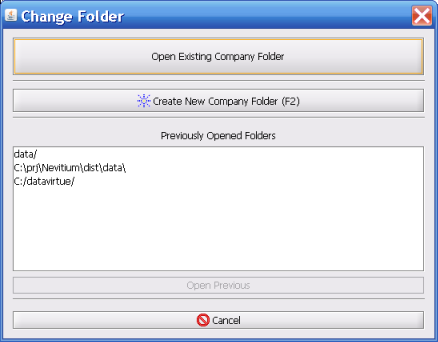
Backup to ZIP File
The backup feature uses a simple dialog to gather the desired folder where you want the zip file saved to. It also lets you specify a custom name instead of the default. The backup feature merely compresses your data files and settings files into standard zip file format that can be accessed with a number of free utlities including Windows explorer which now has integrated zip file support. There is no restore feature inside Nevitium. This was removed to prevent people from accidently restoring into the wrong company folder. Restoring is a simple matter of extracting the needed files to a company folder. To be safe you can extract the backup files into a new empty folder to test or restore. Remeber to test restore the backups to make sure they are working properly.
Nevitium lets you record two backups at once when using this feature. The secondary backup is configured in Settings and is transparent during the backup process. Meaning the secondary backup is always going to be recorded to the configured location in Setttings without prompting you.
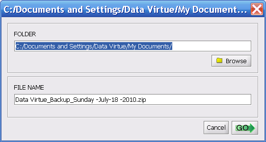
Basic Export
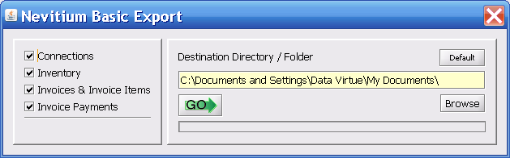
Full Export
Full Import
Convert from v1.4 Full Export
Settings
Settings Tab: Company Information
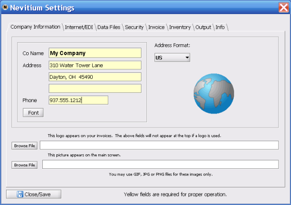
Settings Tab: Internet/EDI
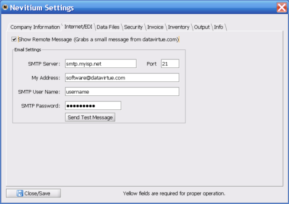
Settings Tab: Data Files
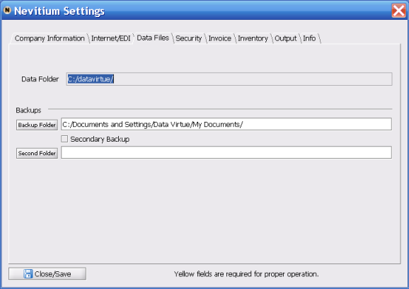
Settings Tab: Security
To enable security you must set a password for the "master" user. To do this click on the "master" user name in the table on the left. Then type the new password into both fields on the top right and click "Reset". The box on the bottom left should turn green and say "Security System Is Active". To turn off security just give the Master user a blank password.
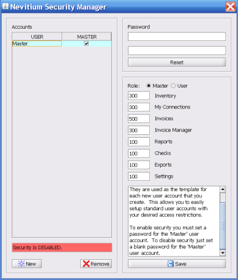
Settings Tab: Invoice
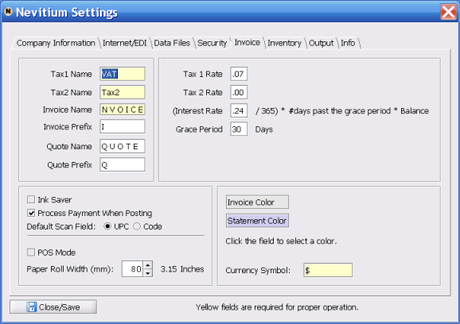
Settings Tab: Inventory
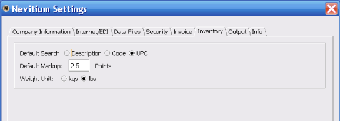
Settings Tab: Output
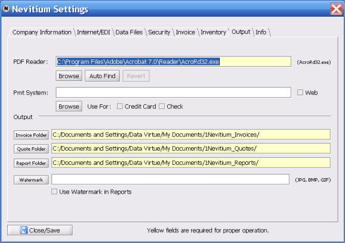
Settings Tab: Info
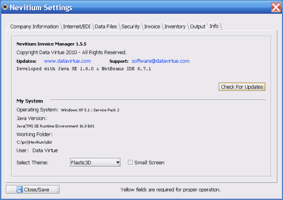
Exit
This unlocks the current company folder and closes Nevitium. If Nevitium is open and you experience sudden power loss the current company folder that was open at the time is going to be locked. This means no one will be able to access the data without first unlocking the "data.run" file. There is a free utility available for Windows to easily unlock files, its called...you guessed it...Unlocker.
Change User
If security is enabled you can change users with this menu option. (See Security)
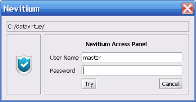
Tools Menu
My Connections
Do not delete records unless you know they are not used on documents.
Search and Export
The export feature pulls all the data you see in the table and converts it to a basic csv text file. You can filter out certain contacts and display only what you want to see with the search feature. For instance, if you needed a list of all your customers in a certain towne or region you would select the "Customers" radio button and change the search field to City/Town, then type in the city name and hit Enter (Typing "cinci" would return all the "Cincinnati" records.). All records fitting that search will be displayed in the table. To reset the table and see all the records again clear the search box and hit Enter. The export file can be used by many programs and business applications. It is possible to use data such as email addresses or fax numbers in other applications or for import into other databases.
When searching don't look for exact matches, instead only type the portion of text you know will be present. For example, to search for the last name "Anderson" you would type "ander" and hit Enter. This also allows you to search for partial phone numbers (Last Names, etc..) making it easy to find records faster. You could put key-words into the Misc field allowing you to organize and find customers in diverse ways. You can search the Misc field and return all customers with certain keywords. Don't use quotes or wild cards in your search strings.
Every time you export from My Connections to the same file name Nevitium appends (adds to the end) the export data instead of overwriting the file. This allows you to combine data from different searches. If you want to start over just specifiy a new file name when exporting.
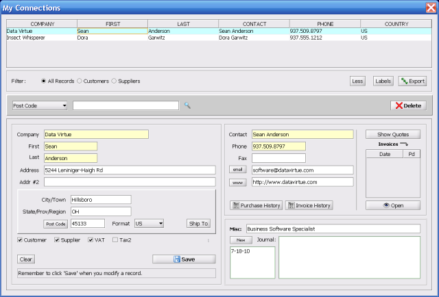
Labels
: INSERT VIDEO TUTORIAL :
To create labels you can perform searches to narrow down a list of contacts that you would like to print labels for. However, once you have the records in sight you have to highlight them in the table before hitting the Labels button. Hold down Ctrl and click each record you would like to highlight in the table view. You can also hold down Shift and use your arrow or Page Down/Up keys to select large amounts of records. Once you have the desired rows highlighted click the Labels button.
Making Labels
- Highlight rows in My Connections table view. (Ctrl+Click[row])
- Click the Labels button.
You need to specify the label dimensions you are using. Right now Nevitium only supports sheet lables for inkjet and laser printers. Included are some pre-defined common label dimensions based on the popular Avery label company products. Notice the "spinner-boxes" called Skip and How many of each. The "Skip" option allows you to specify how many labels to skip on the sheet counting from left to right. This allows you to print single "one off" labels on sheet stock without wasting. You can also print a number of duplicates for each selected record by adjusting "How many of each".
Avery offers free software that can print labels and work with data exports.
Fast Print only works when you have Adobe Reader installed on Windows. 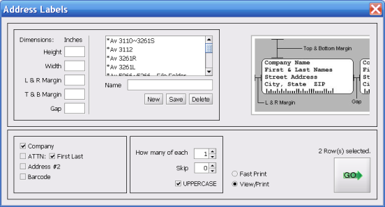
Printing the Labels
I noticed one day that my carefully designed label layout was misaligned on the pages when printed. I had been using older versions of Adobe Reader since I'm not a fan of the later versions (Version 7.0+). I had recently removed the older versions and started using version 7.0. This version however uses a different default scaling method when printing. Foxit looked even worse. Adobe defaults should be fine for invoices but are not recommended, Foxit defaults are not recommended for any documents in Nevitium. This problem has a simple solution.
PDF Viewer Label Printing Guidlines
- Adobe Reader: Set Page Scaling to None when printing.
- Foxit Reader: Set Page Scaling to Actual Size and turn off (deselect) Auto-Center.
Adobe Print Dialog
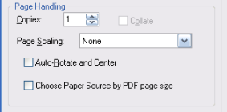
Foxit Print Dialog
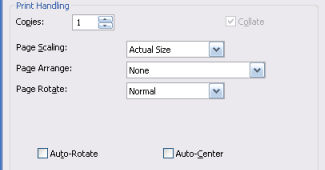
Inventory Manager
NOTE: The number at the bottom right-hand side of the inventory table is the total cost of all inventory.
Search and Receive
When the Inventory Manager is started it is automatically awaiting data entry into the search box from a barcode scanner or keyboard. When you type or scan in search criteria for Desc and hit ENTER it displays a new table of only those records which match the search text.
For example, If you select the Desc field and search for BOLT it will return all records that contain the word BOLT. For UPC and Code it only finds and highlights the item in the current table.
Receive Mode triggers the Inventory Manager into a different set of behavior. When in Receive Mode each time you scan an item it selects the item, shows it in the detail pane and pops up a window where you can quickly enter a number on the numeric keypad and hit ENTER. If the product doesn't exist Nevitium will ask you if you would like to add it. The whole process is setup so you can scan items and quickly update the quantity with the numeric keypad. This lets you work faster and makes it easier for inexperienced users to be productive when they help out.
There is also a Receive button that lets you update products without being in Receive Mode. Make sure you are searching the proper field though. You can set the default search field in Settings, Inventory Tab.
Tracking Services in Inventory
Select the Services check box to treat the inventory item as a service. This prevents quantity tracking and warnings. It also disables the Size and Weight fields.
Taxes, Unavailable and Partial Quantities
Each item can have a tax status set for each tax type. A check-mark or selected box means that tax is charged by default. Cleared or unselected boxes mean that by default no tax will be charged. This applies when adding an item to the invoice.
You should not delete inventory items so when an item is discontinued you can mark it Unavailable. Do not delete items unless you know for certain they have not been sold or will not need to be referenced.
If an inventory item can be split-up you can select Allow Partial Quantities. For example, if you are selling somthing by the pound you may want to specify a quantity of 1.5. This number (1.5) would be multiplied by the price set for that item. Make sure you set the Cost accordingly as well. For example, if you have 4000kgs of an item you would set the cost to reflect what you paid for each unit you are going to sell, in this case each kg. If it cost 5254 and you're going to sell it by the kg then the Cost should be recorded as 5254 / 4000 = Cost of 1.32 per kg. You would put 1.32 in the Cost field.
Notes and Groups
Notes can be added to each inventory item. If you select the Show Notes check box at the bottom right of the screen the notes will display when you select items in the table. Otherwise you can hit the notes button after selecting an item to see the notes or edit them. Only 1024 characters are stored.
Inventory Groups provide a way to add multiple items to an invoice or quote with one scan action or simple code. Select each item in the inventory table that you would like to be included in a group. Click the Groups button and provide a name for the selected group of items.
Once you are at the quote/invoice screen you can add the group to the invoice by typing a / followed by the group name you created from inventory. Example: /groupname
The Inventory Manager also allows you to save two items that have the same Code or UPC. When the product is scanned both entries are added to the invoice or quote. This make it easy to add automatic discounts for products.
Inventory Pictures
You can associate one picture with an inventory entry. Nevitium will display and manage the image size for you. If you have a lot of inventory items and try to load large pictures you can experience out of memory errors with the default runtime settings. It is possoble to allocate more memory for Nevitium with the use of startup switches. [...insert link for custom heap size tutorial...]
When you select an inventory item that has a picture associated with it the View Pic button will enable. When you select a picture to associate with an inventory item Nevitium only stores a link to the location of the image file. If you move the file Nevitium will not be able to find it.
Inventory Labels
Select each item you want to generate a label for. Click the Labels button and choose what kind of label you want to generate for the selected inventory items. For label printing issues see:Printing the Labels
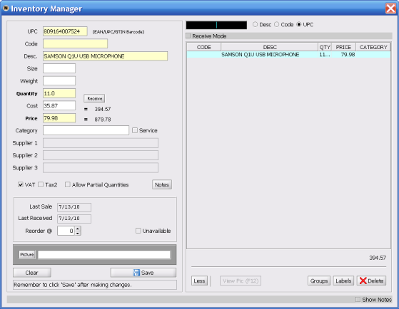
Invoice / Quote Manager
The invoice manager allows you to monitor the health of your company's billing operation. It opens by default with a list of unpaid invoices. At the top you can easily select to view paid invoices, voids and quotes. The menu bar changes when entering each view to reflect the available options for invoice or quote management. When viewing an invoice you also have access to key invoice mangement options for convenience. Nevitium aims to keep invoice management and customer relations naturally integrated. When you are on the phone talking to customers you don't have to flip through a bunch of screens to get what you need.
At the bottom you will see payment activity for a selected invoice. Nevitium strives to provide maximum flexibility for tranacstions required by customers. Individual product returns, regular payments, levee of fees or interest to increase a balance, acceptance of credits to decrease a balance, refunds for overpayment, acceptance of in-house accounts (gift cards) can all be accomplished with Nevitium. You can also generate a detailed statement for each invoice showing a complete history of activity.
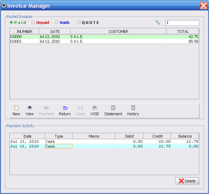
The payment window allows you to process a number of transactions against an invoice. Cash, CC and Check are self explanitory. If you choose Credit the "payment" will not be counted as revenue but it will decrease the balance of an invoice. This is explained on screen.
Selecting Prepaid lets you use a pre-paid account management system built into Nevitium. You can scan, swipe or type in an account number and apply the payment on an invoice from an in-house credit account. Prepaid payments are counted seperatly in the revenue report.
A Fee is applied to increase the balance on an invoice. This could be from undercharging or from bad check fees. Refunds can only be applied when an invoice is showing a negative balance from overpayment or product returns.
If you have an external payment procesiong service like PayPal or software like PCCharge(Verifone) you can automatically launch it from Nevitium to make things easier. You have to point to the application or link to the web service from the Settings-->Output tab.
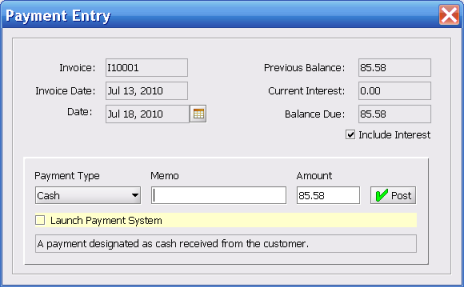
You can only return one item at a time. Nevitium will edit inventory records to reflect product returns and update invoice payment history to reflect the product returns.
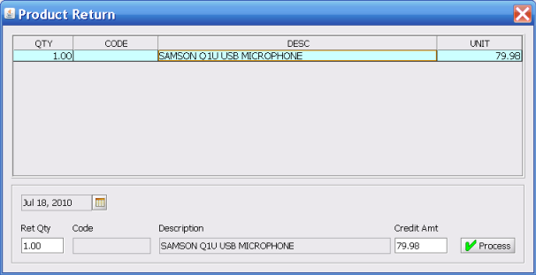
Quick Invoice / Quote
Invoices and quotes are basically built on the same screen. Its what you do at the end that matters. If you click Post an invoice is created. If you click Save a quote is created. Quotes can live forever making them effective invoice templates as well. When you view a quote you can change it, resave it or copy it to an invoice. The most recent date is used by default when creating an invoice or quote.
Bill To and Ship To
You can type in Bill To and Ship To addresses or you can click the Bill To or Ship To buttons. When you press the Bill To button the My Connections screen is opened with a listing of Customers, by default. Click the row you want for the Bill To address and click Select. You can also double-click a row as a shortcut. When you insert a Bill To address this way the Bill To field is disabled on the invoice screen. To clear a previuosly selected Bill To and return you to an enabled Bill To field you need to choose None in My Connections.
The Copy button simply copies the information from Bill To over to the Ship To field.
After you have inserted a Bill To address from My Connections and you click the Ship To button Nevitium will ask if you would like to select from shipping addresses for the current customer. If you select Yes the customer's shipping addresses will be shown. If you select No or there is no valid Bill To information the My Connections screen will come up.
You should always use the Bill To field for tracking customers. If you only use the Ship To field (no Bill To information) Nevitium will not be able to track invoice history for the customer. The customer is tracked on the Bill To field.
Invoice and Quote Numbering
Invoices are numbered automatically. If you want to provide a custom invoice number you need to enabled editing by marking the Edit checkbox. Nevitium will still make sure the invoice number is unique by checking the database before posting. If you Save the invoice as a quote the number will be changed appropriatly before saving. To revert or default back to the next auto invoice number you can click the Invoice# button.
Non-Inventory - Misc Items
You can apply one-off items to an invoice with the Misc button. The Non-Inventory Item dialog will display allowing you to provide the details or the line item. The description field has a type-ahead feature. It will remember past items you have added, saving you some typing. If you don't apply the proper Cost amount the Cost Of Goods Sold (COGS) report will be inaccurate of course.
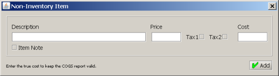
Packing Slips - Calculate Weight
The invoice item table has editable feilds making product pricing flexible. You don't have to rely 100% on inventory insertions to set price and tax information for an item. You can edit the Quantity, Unit Price and Tax status for any item after adding it from inventory. The table also allowes multiple selection for deleting items, printing packing slips for select items and calculating the wieght. Nevitium uses the measurement system from Settings under the Inventory tab and the amount specified in inventory to calculate total weight for selected items on an invoice. These features make it more convenient for companies that ship packages daily.
Invoice (Quote) Message
Saving (or converting) a Quote or Invoice
Invoice PDF - Printing Problems
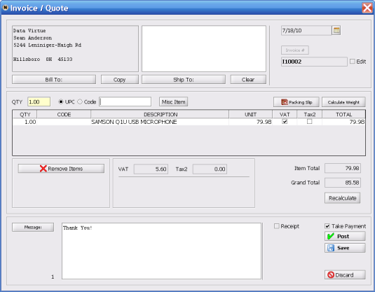
Print Checks
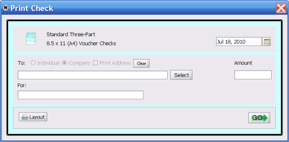
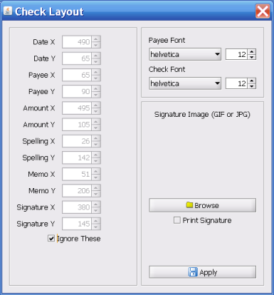
Blank Work Order
Launch Payment System
Prepaid Account Manager
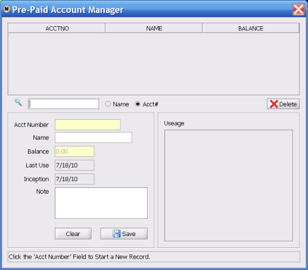
Reports Menu
Basic Report Dialog
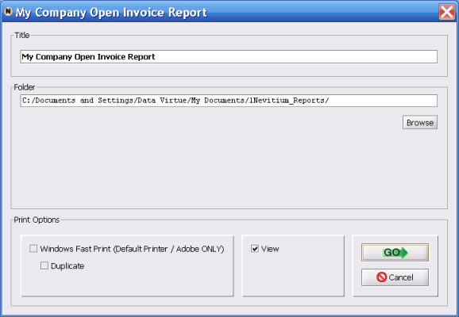